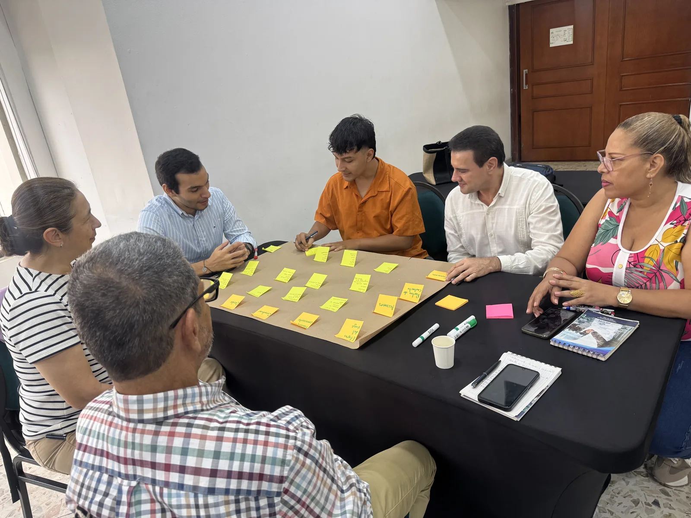
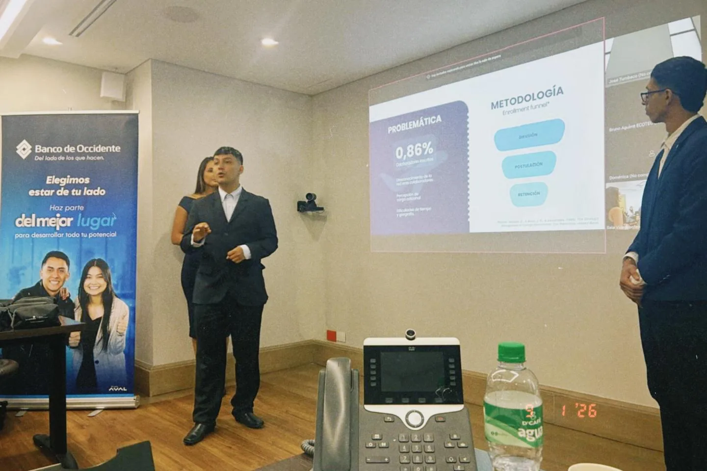
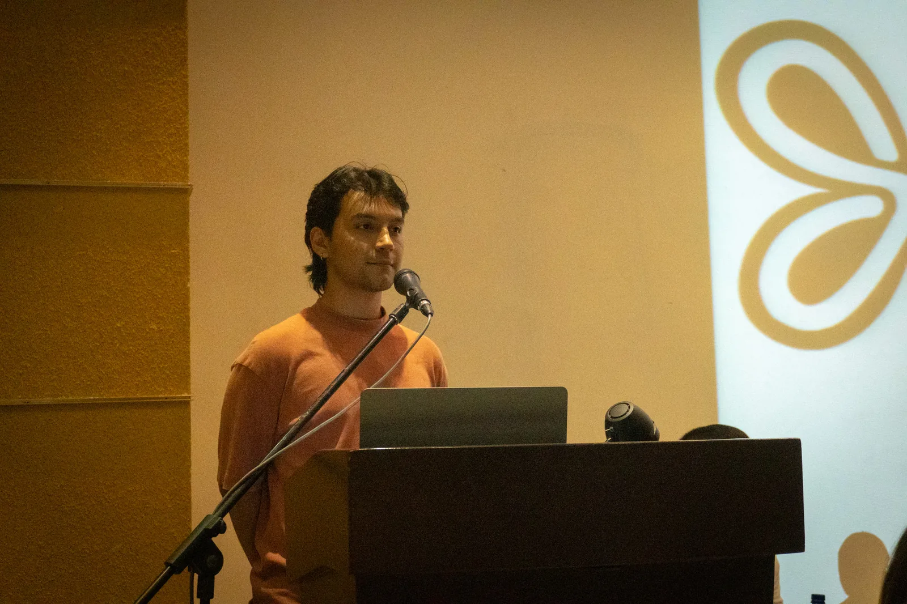

La comunicación como herramienta para conectar personas, organizaciones e impulsar la innovación territorial.

Proyectos donde la comunicación se convierte en herramienta de transformación. Acompaño procesos comunitarios, articulo actores diversos y diseño mensajes que visibilizan realidades sociales del territorio.

He diseñado e implementado planes de comunicación integral para organizaciones, alineando objetivos institucionales con contenidos claros y efectivos que fortalecen la cultura organizacional y la relación con públicos internos y externos.

Espacios donde combino creatividad y oficio. Cubrimiento fotográfico y audiovisual de eventos, moderación de conversatorios, maestro de ceremonias y talleres, siempre desde la comunicación como puente entre personas y proyectos.
Director de la especialización en Comunicación y Periodismo Digital y director de la maestría en Comunicación Digital.
Ver documento →Delegado nacional de la Plataforma Distrital de Juventudes. Director ejecutivo de la Asociación Colombiana de Juventudes.
Ver documento →Docente de la Universidad Autónoma de Occidente. Doctora en Ciencias Sociales. Investigadora en género, violencias basadas en género e interseccionalidad.
Ver documento →